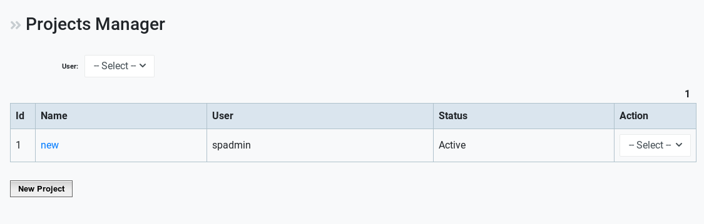
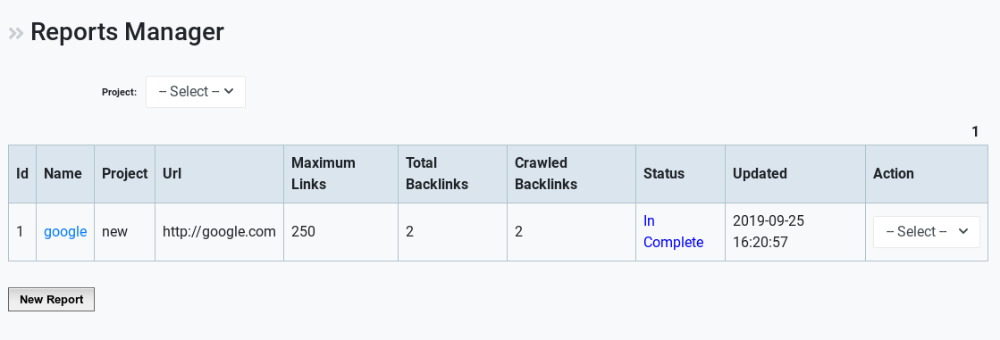

Link Diagnosis¶
Link Diagnosis plugin for Seo Panel will help you to get a complete detailed report about your backlinks and you can also easily track the backlinks of your competitors.
Using the reports generated by Link Diagnosis plugin you can compare the backlinks of your site with competitors and can do needful steps to improve the search position for a particular keyword.
This plugin consists of several features including projects manager, reports manager, import reports, view reports, report summary, popular anchors and many more.
Projects Manager¶
Creating a project is the starting step for using the Link Diagnosis plugin.
Inorder to create a new project, follow the below mentioned steps after selecting Projects Manager from Link Diagnosis plugin :
Click on New Project
Enter a name for the project and click proceed

The newly created project will be listed there. Actions including Edit, Inactive, Report and Delete will be provided along with the project list.
Reports Manager¶
Reports manager helps in creating report for projects created.
To create a new report, follow the below steps:
Click on New Report
Select the project, enter a report name, the url, maximum number of links and the backlink search engine to be used.
Click on Proceed

The newly created report will be listed there. Actions including Edit, Delete, Run, View Reports along with other options will be provided..
Import Backlinks¶
This featire can be utilized to import banklinks to a particular report corresponding to a project.
To import backlink, all you have to do is the following:
Select the project
Select the report
Add the links required (multiple links can be added seperated by comma. Eg: http://www.seofree.net/, http://www.seofreetools.net/scripts/)

Click on Proceed
A table showing result regarding the backlink addition will be shown instantly.
View Reports¶
All the reports associated with projects can ve viewed here. Options to export and print the reports are provided.
Filtering the required reports from the database is made easy with the filters provided. The check status action provided can be also utilized to actively get the lastest status of a URL.

Reports Summary¶
Reports Summary provided an overall summary of the reports collected in the database. It quickly helps in determining the possibilities and rectifications that can be made.

Export and Print options are also provided.
Popular Anchors¶
This is a reporting feature based on the Popular Anchors. All sorts of filters are also provided here.

Export and Print options are also provided.
Plugin Settings¶
Settings related with the plugin can be configured here.
To change a setting:
- Select or Update the fields like Backlinks Search Engine, Allow user to access reports manager, Allow user to generate reports, Maximum links in report.
- Click on Proceed to update the values.
User Type Settings¶
Settings related to the Type of user can be configured from here.
There are only two options provided:
- User Type
- Backlink Count
Search Engine Manager¶
This feature helps in managing the search engines associated. You can either change the status of each search engine to Active or Inactive.
A table dislpaying the overall details will be present in this page:

Cron Command¶
The Cron Command menu briefs the command that can be added in order to make the report cron work perfectly.
0 0 * * * php /opt/lampp/htdocs/seopanel/plugins/linkdiagnosis/reportcron.php